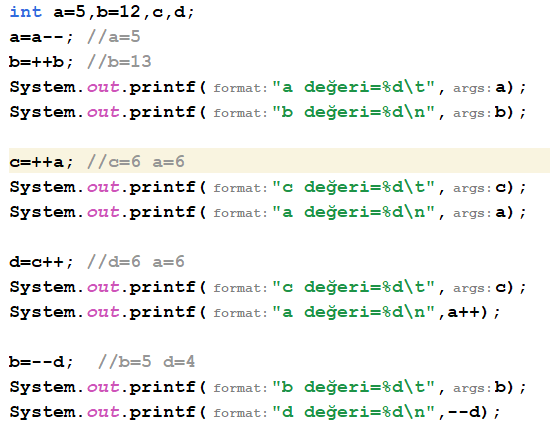

Site Kullanma Kılavuzu (For developers)
Week1
System.out.print--> Aynı Satırla Yazdırma
System.out.println-->Alt Satıra Geçer
System.out.printf--> String İfadeler İçin
System.out.printd--> Decimal İfadeler İçin
System.out.printt--> Time ve Date İfadeleri İçin
/n--> Yazıldığı zaman ondan sonrakini alt satırdan başlatır.
System.out.printf("Nasılsın?");
System.out.printf("\n Selam canım");
The Output is : Nasılsın
Selam Canım
/t--> tab tuşudur, bir boşluk bırakır.
%d--> integer değer yazdırılırken
%s
string değer yazdırılırken
%f
float değer yazdırılırken galiba
Örneğin;
mt1=45,mt2=67,finalexam=82,result;
result=(mt1*3/10)+(mt2*3/10)+(finalexam*4/10);
System.out.println(result); ==>Output :
65
System.out.printf("%d",result); ==>Output :
65
Yukarıda yazılanı println ile yazmak kolay
fakat printf ile yazmak biraz daha komplike.
Printf ile yazarken önce tırnak içinde
yüzde d olarak belirttik, sonra
virgül koyup değeri yazdık.
result=65;
String selam="selamnaber cancan";
System.out.printf("%s",selam);
System.out.printf("%s %d ",selam, result);
double resultdouble=78.5;
System.out.printf("%.2f",resultdouble); ==>.2f yazarak virgülden sadece 2 sonrasına kadar olan değerleri ekrana yazdırdık.
Değerleri birbiriyle değiştirmeye çalışalım;
int a=55,b=66,c=77,d=88,e;
e=a;
a=d;
d=e;
System.out.println(a);
System.out.println(b);
System.out.println(c);
System.out.println(d);
Şimdi de Kullanıcıdan Değer Alalım!
Önce kütüphaneyi ekle :
import java.util.Scanner;
Sonra da : Scanner s =new Scanner(System.in);
Sağdan ve Soldan --/++ farkları:

The Output is :
a değeri=5 b değeri=13
c değeri=6 a değeri=6
c değeri=7 a değeri=6
b değeri=5 d değeri=4
Yer Değiştirmeler
2 tür yer değiştirme anlatıldı bize.
1)
integer a ve b değerleri tanımladık
a ve b'nin yerlerini değiştirmemiz icap ediyor.
int a,b;
System.out.print("a:" + a);
System.out.print("b:" + b);
a=s.nextInt();
b=s.nextInt();
a=a+b;
b=a-b;
a=a-b;
a=12,b=24 için,
a=24
b=12 olur
Week 2